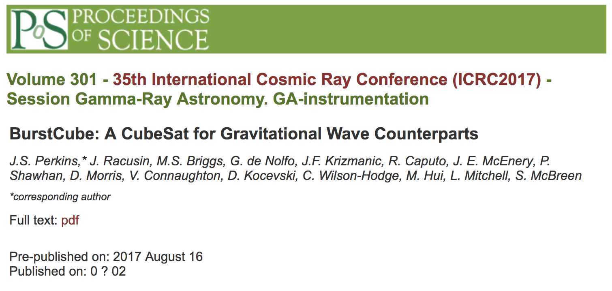
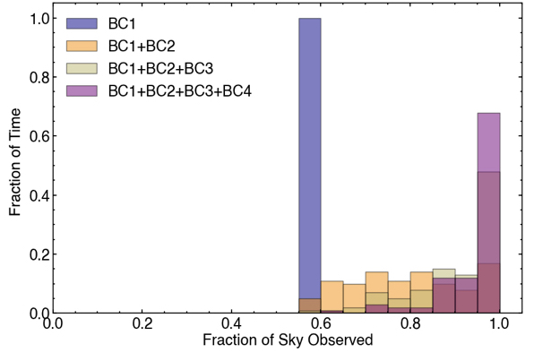
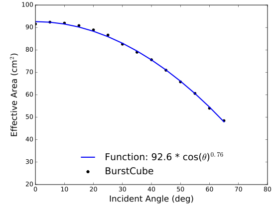
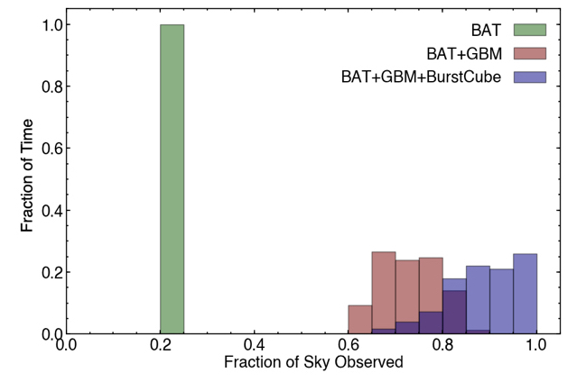
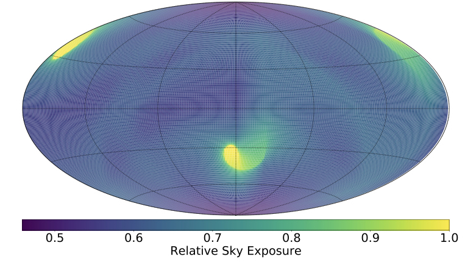
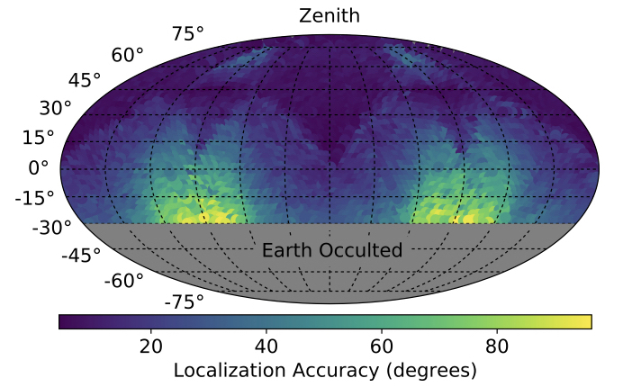
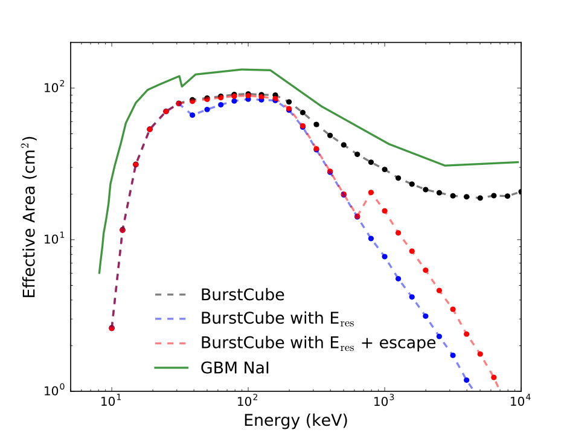

NEWS AND INFORMATION
Here are some selected news items and publications.
Click on the images to make them bigger.







BurstCube Detects Gamma-ray Transients
The first direct detections of Gravitational Waves (GWs) has brought astronomy into a new era of discovery. The search for electromagnetic counterparts to GW sources is now more important than ever before. BurstCube will be a 6U CubeSat (10 cm x 20 cm x 30 cm) composed of 4 scintillator detectors read out by arrays of silicon photomultipliers. BurstCube will automatically detect gamma-ray transients onboard (astrophysical, solar, and terrestrial), sending rapid alerts to the ground to enable follow-up observations.
BurstCube Effective Area
Despite the constraints of a CubeSat, BurstCube achieves an effective area of 70% of Fermi-GBM at 100 keV and 15 degree incidence. The effective area as a function of energy, and the corresponding curve for the larger Fermi-GBM NaI detectors are shown for reference.
Performance Stats:
Time Until Launch
Here are some selected news items and publications.
Click on the images to make them bigger.
We'd Love to hear from you!
Swing by for a cup of , or leave me a note.